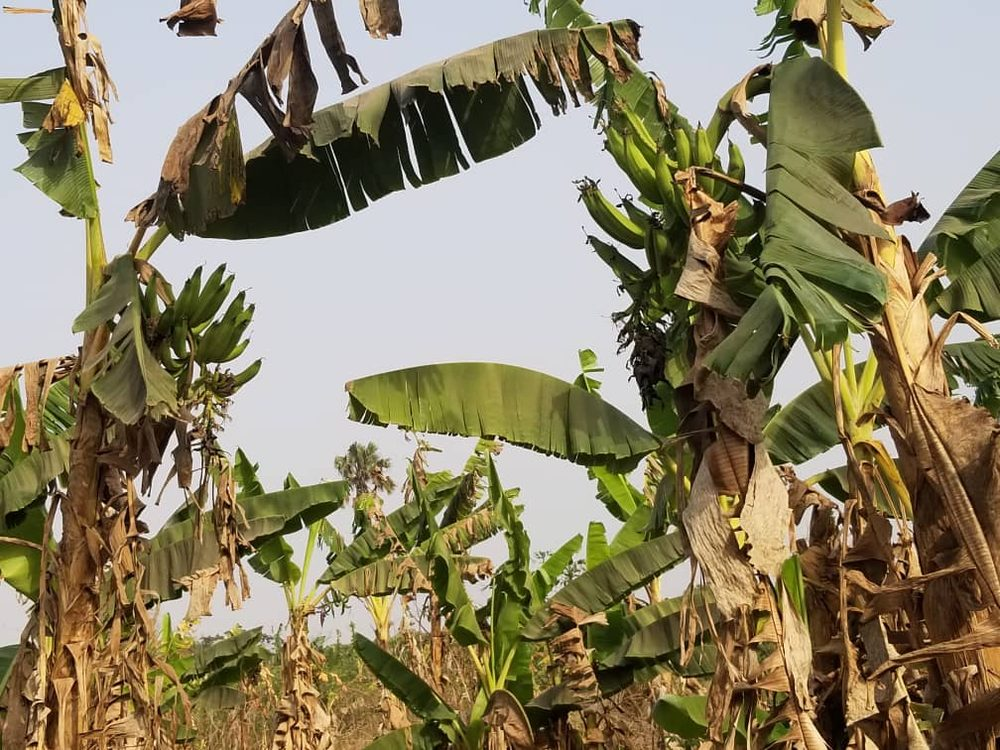
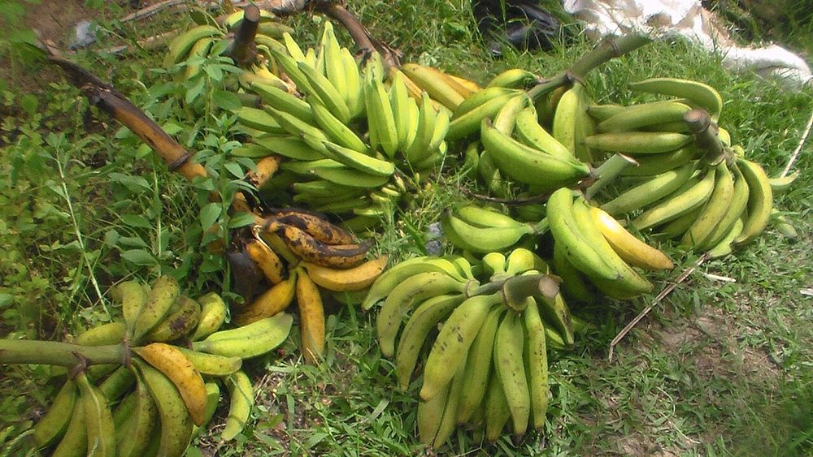

Culture vivrière
Banane plantain
Demande urbaine en croissance
- Cycle 10 à 12 mois (rejets successifs)
- Mise à jour 2026-10-21
- Niveau de confiance partiel

Présentation et utilisations
Culture vivrière majeure des marchés urbains, consommée mûre ou en alloco. Sa récolte étalée sur l'année lisse la trésorerie entre deux campagnes de rente. Elle demande peu d'intrants mais beaucoup d'eau et une bonne gestion des rejets.
Climat et sols
Climat chaud et humide, pluviométrie régulière ou irrigation. Sol profond, fertile, bien drainé ; le plantain craint l'engorgement et la sécheresse prolongée. Vent fort = risque de verse : préférer une parcelle abritée.
Variétés adaptées
Les variétés locales se distinguent par la taille du régime, la longueur du doigt et la qualité de cuisson. Les noms précis ne sont pas documentés ici ; demander les variétés testées dans la zone (station de recherche ou service de vulgarisation).
Calendrier cultural
Plantation possible en début de saison des pluies ; première récolte 10 à 12 mois plus tard, puis régimes successifs. Les rejets assurent la continuité du peuplement.
Préparation du terrain
Trouaison large, sol ameubli, matière organique compostée au fond du trou. Éviter les anciennes parcelles de bananier sans contrôle des nématodes.
Semis et plantation
Plantation de rejets sains (œilleton), parés et cicatrisés. Éviter les rejets issus de plants malades. Espacement à confirmer localement pour permettre la circulation et limiter la pression sanitaire.
Entretien, fertilisation, irrigation
Sarclages, élimination des rejets excédentaires (ne garder qu'un rejet de remplacement par pied), paillage pour conserver l'humidité, apports organiques réguliers. Un seul régime par pied à la fois.
Maladies, ravageurs et prévention
Surveiller les nématodes, les charançons du faux-tronc et les maladies foliaires. La prévention repose sur des rejets sains, la rotation, l'élimination des plants atteints et la propreté de la parcelle. Aucun seuil de traitement documenté ici.
Récolte et post-récolte
Récolter le régime quand les doigts sont formés et que les premières bananes jaunissent légèrement. Couper le pseudo-tronc pour faciliter la repousse du rejet.
Conservation et transformation
Conservation courte à l'air libre ; le froid abîme la peau. Pour vendre plus loin, récolter légèrement vert et transporter sans chocs. Transformation possible en chips ou farine.
Coûts, rendements et débouchés
Débouchés : marchés urbains, alloco, chips, restauration. Aucun prix vérifié ici. Postes de dépense : rejets, trouaison, paillage, main-d'œuvre de récolte et de transport (poste souvent sous-estimé).
Tutoriel étape par étape
- 1. Choisir la parcelle
Terre profonde et drainée, à l'abri du vent, près de l'eau si la saison sèche est longue.
- 2. Préparer les trous
Faites de larges trous, mélangez du compost mûr à la terre de surface.
- 3. Sélectionner les rejets
Choisissez des rejets vigoureux, sans tache ni pourriture ; parez les racines et laissez-les sécher.
- 4. Planter et pailler
Plantez bien droit, le collet au niveau du sol, puis paillez pour garder l'humidité.

daSupremo · CC BY-SA 4.0 · Wikimedia Commons - 5. Conduire le peuplement
Gardez un seul rejet de remplacement par pied, enlevez les autres, apportez de la matière organique.
- 6. Récolter et vendre vite
Récoltez à maturité laitière, transportez sans choc, vendez vite ou transformez.

Menyea · CC BY-SA 4.0 · Wikimedia Commons
Sources, vérification et limites
- Base de connaissances interne · knowledge/agronomie.md (consulté le 2026-10-21)
Limites de cette fiche. Variétés, densités, rendements et prix non documentés. Les pertes de transport sont souvent le premier facteur de marge : à mesurer localement.
Dernière mise à jour : 2026-10-21. Les prix, rendements et calendriers locaux ne sont mentionnés que lorsqu'ils sont documentés ; dans le doute, la fiche le dit.